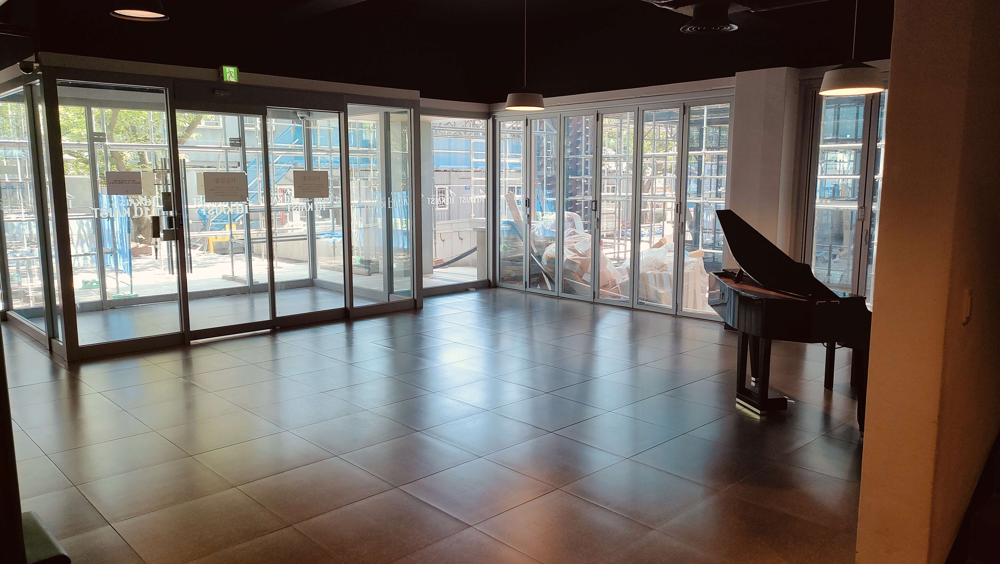
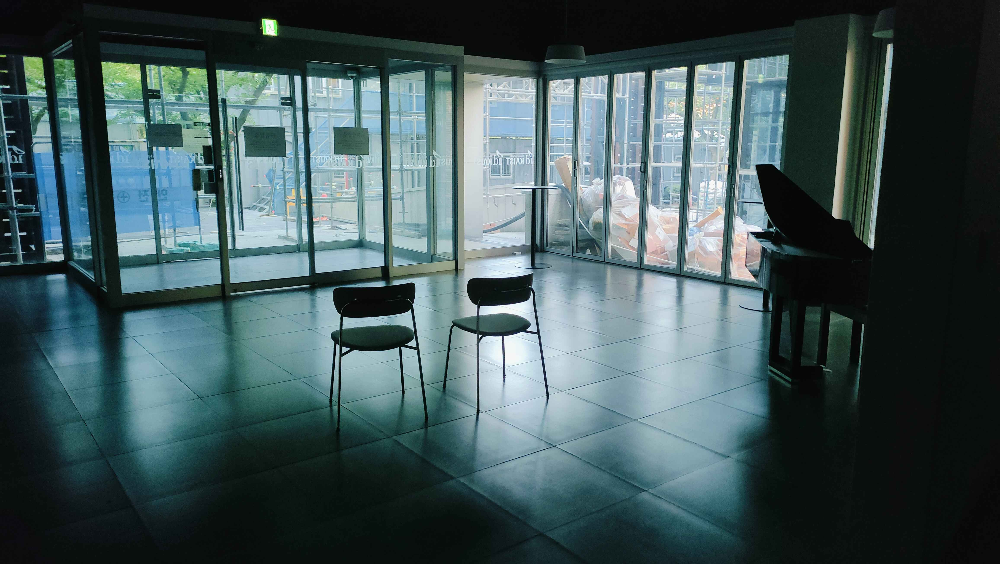

By: Saimmyo Das Arnob

The site before the intervention.
Site: Front entrance of the ID building, now inaccessible due to nearby construction.
The Protocol: Once decorated, this area is now soulless. The visual collision between the formal interior piano and the chaotic exterior scaffolding creates a sense of unease. This implicit protocol actively repels people from standing near the glass.

The addition of two chairs.
To respond to this repelling force, I added two chairs facing directly out the glass doors toward the chaotic construction. Instead of something to turn away from, the addition invites people to sit, stay, and actively observe the visual collision.
Even without direct observation of people sitting in the chairs, the spatial impact of the gesture was immediate. The simple addition of seating transformed a dead, repelling zone into an intentional viewing gallery. By formally orienting the chairs toward the chaos outside, the construction scaffolding is reframed from an inaccessible nuisance into a framed piece of visual art. The implied protocol of the space shifted entirely: instead of "avoid this uncomfortable dead end," the room now communicates "you are invited to pause, sit, and observe the collision of these two worlds."